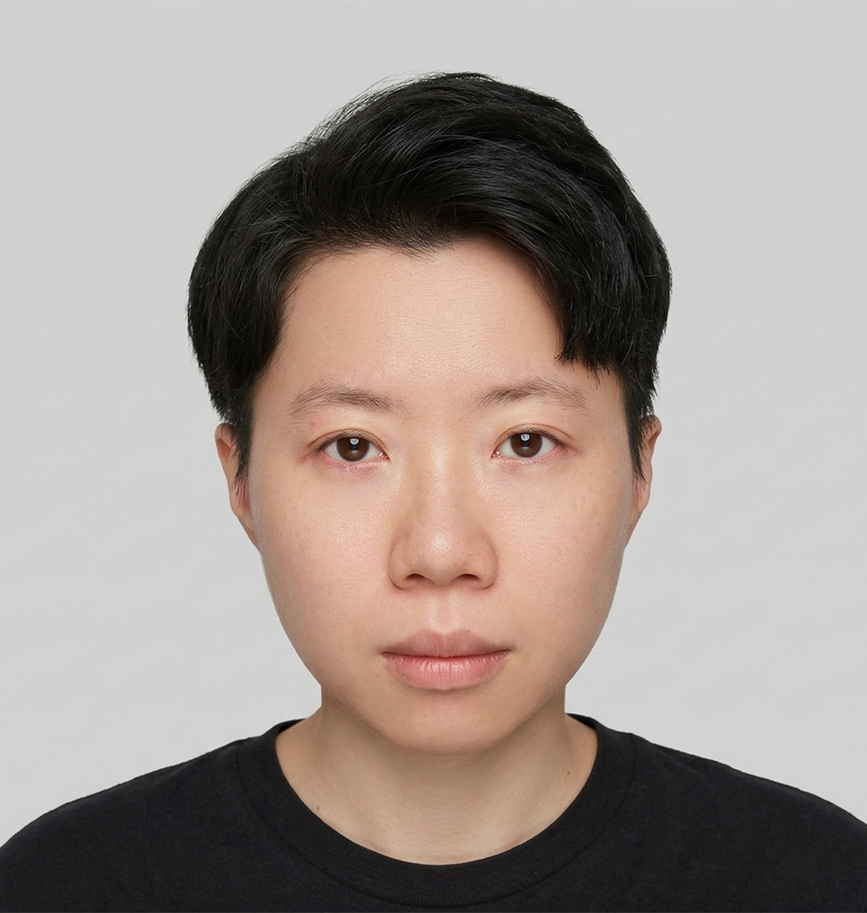

關於我 — About
用視覺解決
用視覺解決
商業問題。
憑藉 12 年來在視覺美學與介面設計的深厚跨界累積，過去 7-8 年我專注於 UI/UX 實務，成功在醫療、金融、房仲、B2B SaaS 等多元領域完成了 20+ 個改版專案，以系統化的設計思維為產品創造實質價值。

克制的設計觀
我的設計風格偏「克制」——不擅長花俏，但擅長讓複雜的事情變得清楚。我相信邏輯不通的視覺只是裝飾；設計的價值在於讓對的資訊在對的時機被看見。
AI 工作流 × 設計提速
這兩年最大的工作方式轉變，是把 Claude Code、Google AI Studio 整合進日常設計流程——讓我把時間留給更值得思考的決策。
核心價值 — Values
簡約
去除雜訊，讓重要的事情先被看見。
正直
設計決策要能說清楚為什麼——對自己，也對協作者。

「Design System 不是文件，是團隊協作的共同語言。」
歷程 —
The Journey.
2024 — 現在
Senior UI Designer / UI Design Lead @ 股感資訊
負責產品設計系統的建立與維護，以系統思維處理產品迭代，確保跨版本的視覺一致性與可擴展性。
2021 — 2024
網頁前端視覺設計 @ 魁亨科技
主導 20+ 個跨產業改版專案，涵蓋前後台系統設計，以系統化設計思維為產品創造實質價值。同期帶領 6 人設計團隊，建立設計規範與 Handoff 流程。
2019 — 2021
UI Designer / 前端 UI 設計 @ 康闓科技
負責前後台系統的 UI 設計與前端切版，建立工程思維，確保設計能確實落地。